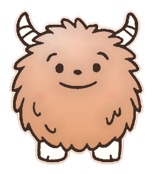
01 毛球 Fluff
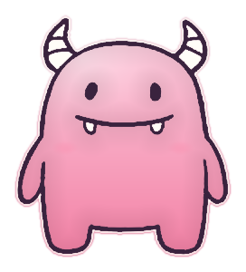
02 麻薯 Mochi
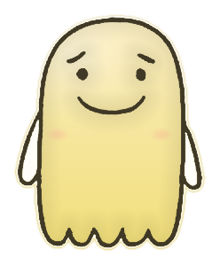
03 布丁 Pudding
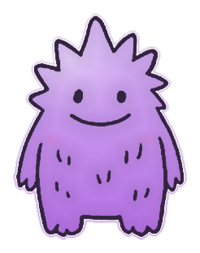
04 刺刺 Spike
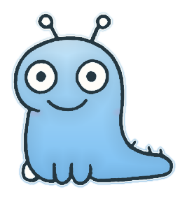
05 星眼 Orb
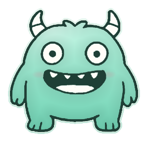
06 软糖 Gummy
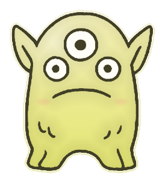
07 三眼 Trio
08 角角 Hornpip
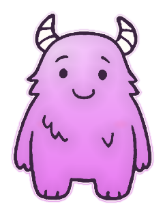
09 雪团 Snowball
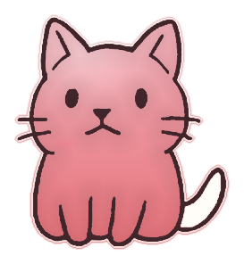
10 咪咪 Kitty
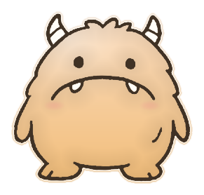
11 嘟噜 Doodle
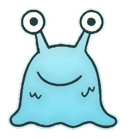
12 天线 Antenna
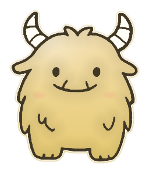
13 奶油 Cream
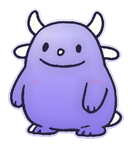
14 糖豆 Bean
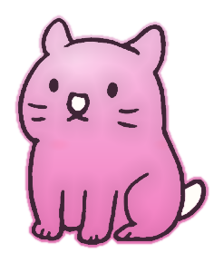
15 泡泡 Bubble
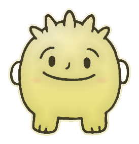
16 太阳 Sunny
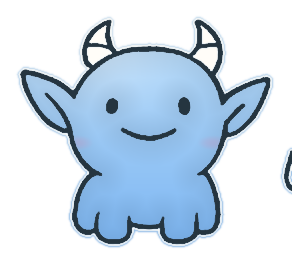
17 小翼 Wingy
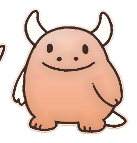
18 飞飞 Flappy
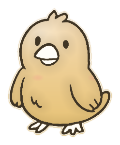
19 啾啾 Chirpy
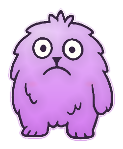
20 毛毛 Fuzz
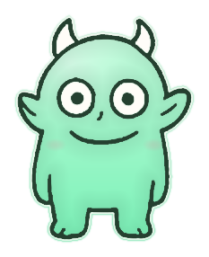
21 瞪瞪 Starey
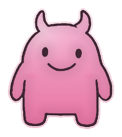
22 角宝 Hornbud
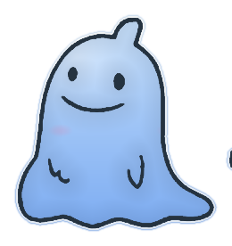
23 幽幽 Boo
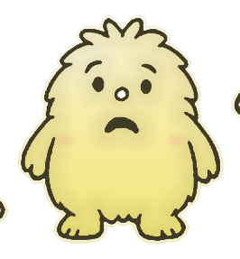
24 惊慌 Jitters
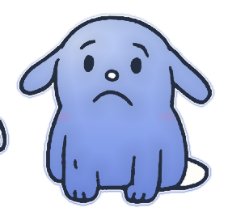
25 垂耳 Droopy
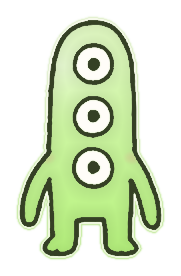
26 高塔 Tower
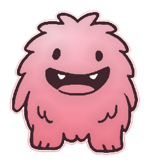
27 咧嘴 Grinny
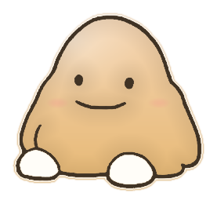
28 团子 Dumpling
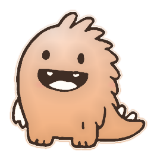
29 尖牙 Toothy
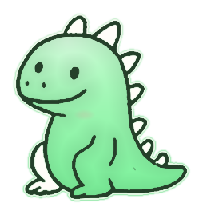
30 小龙 Dino
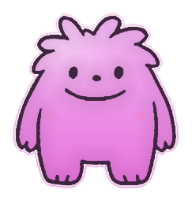
31 绒绒 Fluffet
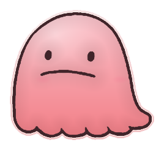
32 叹气 Sigh
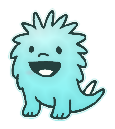
33 刺猬 Quilly
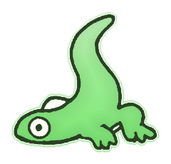
34 蜥蜥 Liz
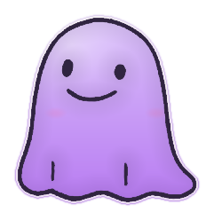
35 飘飘 Wisp